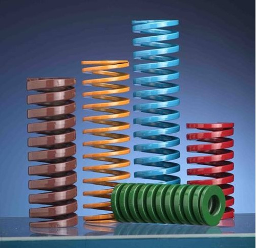
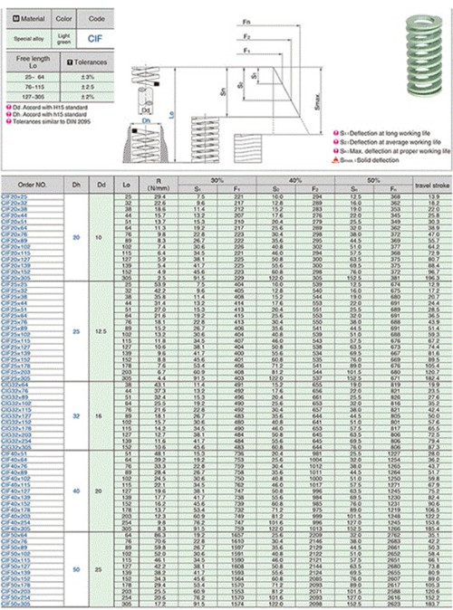

Mold spring, not as hard as you think
2019-10-23 09:17:21
- TAG :
With the development of die industry in recent years, the number and varieties of die spring, especially steel wire die spring with profiled section, are increasing. The spring of special-shaped section mould has the characteristics of large rigidity, long life and small volume. But its design theory development is relatively slow. At present, in addition to the square section of the spring design method is relatively mature, the other section of the spring design method, basically according to the specific section through the test, find out the correction coefficient to obtain the specific section of the empirical design formula, is to this kind of spring characteristics and design problems to make a brief introduction.

This is a question of great concern to the user of the spring and must be clarified. A square cross section is compared with a circular cross section helical spring.
In the same space, the bearing capacity of square section steel spring is 43-48% higher than that of circular section spring. Obviously, the rectangular spring is more than 50%.
From the analysis of the main reason of spring failure, under the same condition, the service life of steel spring with special section is increased by 13-14% than that of steel spring with circular section.
Profiled section steel wire spring can produce large deformation.
The weight of profiled wire spring is large.
Linearity is better than the circular section spring, that is, stiffness tends to be constant. In particular, a spring with a long side wound parallel to the axis.
The application scope is restricted: from the analysis, it can be seen that if the special-shaped section material spring cannot fully use its advantages, it will not produce economic benefits.

(1) the design load cannot be achieved with circular section materials.
(2) replace circular section compound spring.
(3) when the spring of circular material cannot reach the required amount of deformation.
(4) where the spring installation space is small.
(5) where strict spring characteristics are required.
Second, the mold spring design principle
1. Spring material allowable stress (tau) choice, should be in place to ensure that the spring fatigue life is given priority to consider. The dynamic life of springs is generally divided into three categories:
Ⅰ class: carry alternating load number is 106;
Ⅱ classes: carry alternating load number is 103-105;
Ⅲ class: carry alternating load number less than 103;
2. Material ratio (a/b) should not be too large, and the spring winding should not be too small.
3. Design of rectangular profiled spring, be sure to derivation and draw in different ratio, different kind than the (tau) and the shear stress and deformation correction coefficient correction factor (beta) curve or formula.
4. According to the given and restricted conditions, the design method with simple calculation and reasonable parameter selection should be selected.